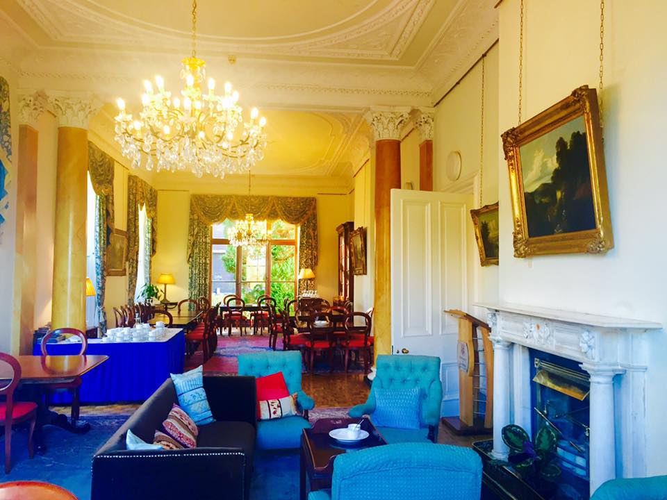
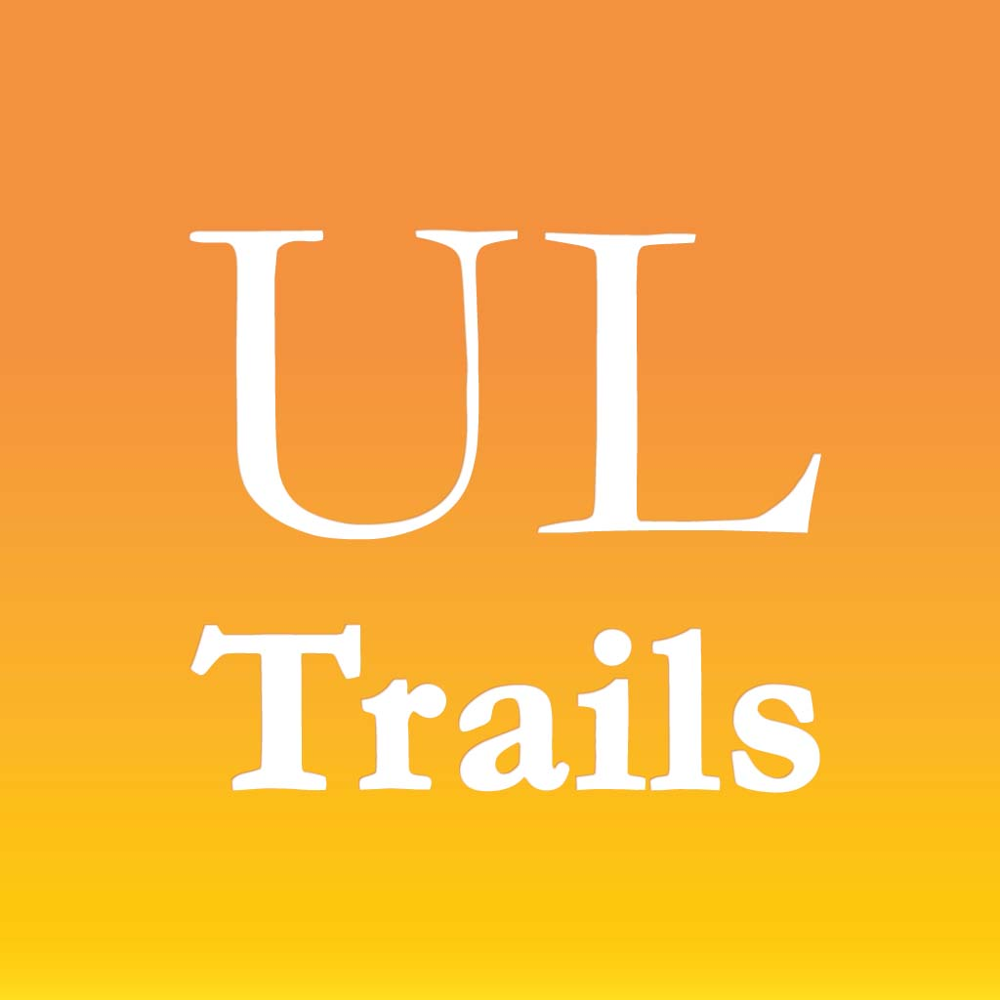

Plassey House
Useful Information
General Information
Completed in the 19th century, Plassey House is home to the offices of the UL President, Vice President Academic & Registrar and University of Limerick Foundation. The house contains a number of meeting and interview rooms as well as the East Room, which is used as an upmarket dining area for visitors and staff alike.
The earlier history of Plassey House and its demesne is bound up with that of two prominent Limerick families, the Maunsells and the Russells. The Maunsells lived in Limerick since 1660 and were prominent in parliamentary politics and as leading members of the Limerick merchant community. From the early 18th century, members of the family joined the East India Company, and in 1757, one member of the family, Thomas, fought under the command of Robert Clive at the Battle of Plassey. Victory in that battle enabled the East India Company to successfully extend its control over much of India. Clive was rewarded by being made a member of the Irish House of Lords and gave the name Plassey to part of his estate near Tulla in County Clare. While there is no evidence that Clive ever owned the site of the present Plassey House, the house was in the ownership of Thomas Maunsell from 1770 and it is likely that it was he who commemorated his part in the conquest of India (and perhaps his friendship with Robert Clive) when he renamed his estate Plassey. The Maunsells built a large water mill at Plassey in 1824, and in the early 1860s, possession of the mill and the house was taken by the Russell family, the most prominent millers in Munster at that time.
In 1905, Plassey House was sold to the Bailey family, who lived there until 1932, when it was sold to Patrick Keating. In 1962, the house passed into the ownership of the National Rehabilitation Board, and in 1970, it became the centre of the new National Institute for Higher Education (NIHE), later to become the University of Limerick.
President Office
Welcome to the website of the University of Limerick. Whether you are a prospective student, graduate or visitor, I invite you to explore our website further to learn more about UL and how we can contribute to fulfilling your ambitions and goals.
Office Of The President WebsiteVice President Academic & Registrar
Professor Paul McCutcheon, Vice President Academic & Registrar, reports to the President and has responsibility for a number of areas, including strategic planning and implementation. Explore our website further to learn more about UL.
Office of The Vice President Academic & Registrar WebsiteEast Room Dining Area
The Plassey House East Room is used as an upmarket dining area for visitors and staff alike.
Plassey House WebsiteCall Plassey House Reception
Plassey House Opening Hours
Plassey House opening hours: Monday to Friday: 8.30 to 21.00, Saturday & Sunday: closed
Call Building ReceptionUL Campus Trails App Guide
Download our UL Trails app will guid you around Plassey House, this self-guided tour features GPS-guided maps, text descriptions and high-quality images at each stop. It also provides video tours so that you can discover the past, present and future of the University of Limerick and gain insights into UL's arts, culture and arboretum.
Download for iOSDownload for Android
Nearest Car Park

Car Park 17: Pay Car Park
Guide Me There
Car Park 18: Staff Car Park
Guide Me There
Car Park 20: Free Car Park
Guide Me There